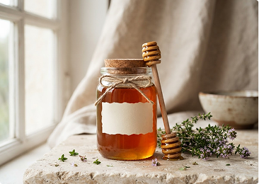
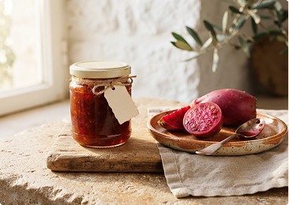

250 g · Récolte artisanale
Miel de thym
60 DHMiel parfumé aux notes florales, récolté dans le Rif.
Récoltes et recettes du Rif
Des saveurs généreuses, préparées avec soin par les femmes de la coopérative.
250 g · Récolte artisanale
Miel parfumé aux notes florales, récolté dans le Rif.

500 ml · Première pression
Une huile fruitée, parfaite pour vos plats et salades.

250 g · Fruits du soleil
Une recette douce qui révèle le goût délicat du fruit.

500 g · Récolte artisanale
Le miel de thym du Rif, dans un généreux format à partager.

1 L · Première pression
Notre huile fruitée en format familial pour cuisiner au quotidien.

500 g · Fruits du soleil
Une douceur fruitée à savourer au petit-déjeuner ou au goûter.
Les prix sont indiqués en dirhams marocains (DH). Pour toute demande de commande, contactez la coopérative.